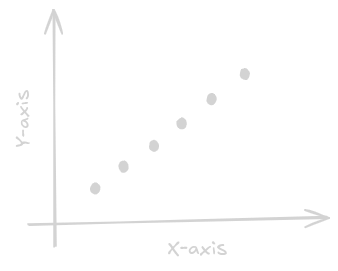
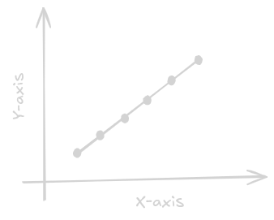
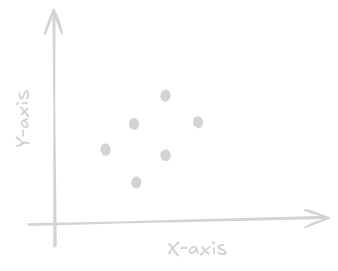
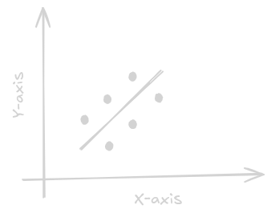
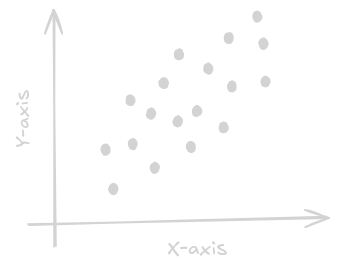

Linear Regression is such an interesting topic. It is used in so many applications even today. But, I looked into articles online and found that it is always starts with a direct formula, y=mx+c. Then, they talk about loss function and assumptions and end the article. No one explains it clearly using first principles. I am going to try my best to explain it clearly using first principles and explain each and every step, why we do what we do.
So, If i give you a set of points like this:

and, ask you to draw a straight line through them that fits the points as best as possible, you would probably draw something like this:

This is the easy case where all the points are perfectly aligned. The line goes through all the points.
But, what if i gave you the points like this and ask you to draw a straight line that best fits through the points?

You would say that is impossible to draw a single straight line that goes through all the points and fits them perfectly. So, I ask you, to atleast draw a straight line that would represent the trend of the points.
So, you would probably draw a line somewhere in the middle of the points. Something like this:

Again, this is a easy case where the points are equally distanced from each other. But, what if i gave you the points like this and ask you to draw a straight line again. You can't just draw a straight line simply in the middle and say, this is the best fit line. Because, we need a way to tell mathematically, what is the best fit line.

To determine the best fit line, we have to go deeper and ask a question ourselves: mathematically, how do we define making a good decision? So, here, enters the decision theory.
Decision Theory
Let's keep those set of points and linear regression aside for a moment. We will come back later, i promise.
So, the process of making prediction is divided into two parts: 1. Inference: Using data to determine the probability of an outcome. This is determined by probability theory. 2. Decision: Using the probability to make a decision. This is determined by decision theory.
Let's take a simple example. Let's say our dataset consists of
X-rays of patients and we need to decide whether the patient has
cancer based on the X-ray. The possible outcomes:
1. Class C1 - Cancer
2. Class C2 - Normal
Now, there are different ways to solve this:
Minimizing the Misclassification rate
If our goal is to simply minimize the number of missclassifications, that is, our goal is to be "right" as often as possible. Then, it is simple, pick the class with the highest posterior probability. If p(Cancer|X-ray) > p(Normal|X-ray), then, pick Cancer. Otherwise, pick Normal.
But, there is a problem here. The cost of missing a cancer patient is much higher than the cost of telling a normal patient that he has cancer.
Minimizing the expected loss
| Predicted: Cancer | Predicted: Normal | |
|---|---|---|
| Actual: Cancer | 0 (Correct) | 100 (Fatal Error) |
| Actual: Normal | 1 (Minor Stress) | 0 (Correct) |
Consider the above loss matrix. This particular loss matrix says that there is no loss incurred if the correct decision is made, there is a loss of 1 if a healthy patient is diagnosed as having cancer, whereas there is a loss of 100 if a patient having cancer is diagnosed as healthy.
So, here, we try to minimize the loss to make a optimal solution. The loss in this case is simply the total sum of loss multiplied by the posterior probability of the class. That is, E[Loss] = Sum(Loss(Ci, Cj) * p(Cj|X-ray))
Reject Option
The another option is a simple reject option. Sometimes, the model can be "unsure". Decision Theory allows for a reject option, where the model refuses to make a choice. We use a threshold(t), if the highest probability is below that threshold, we "reject" the input.
Now, there are three ways to build these systems:
1. Generative Models
Here, we model everything. We learn what Cancer X-ray looks like and
what normal X-ray looks like. We then use bayes theorem to calculate
the posterior probability of the class.
By this way, we can also detect outliers that doesn't look like any
of the classes.
2. Discriminative Models
Here, we don't model the data distribution. We directly model the
posterior probability of the class. We don't care what Cancer X-ray or
Normal X-ray looks like. We just want to classify them.
3. Discriminant function
We just directly find a function that maps the input to the class.
That is, f(X-ray) = Class.
I hope you have understood till now. To give you a simple example to
understand it even better,
1. Models like Naive Bayes, LLMs like GPT, Gemini, etc.. belongs to Generative
models. They understand the underlying distribution of the data.
2. Models like CNNs, RNNs, BERT for classification, etc.. belongs to Discriminative
models. The final layer of these models generally will have softmax layer or sigmoid
layer. Since, these calculates the conditional probability directly.
3. Models like SVM, Perceptron, etc.. belongs to Discriminant function.
They directly find a function that maps the input to the class.
Sometimes, CNN also belongs to this category, if we remove the final softmax layer and just
train the CNN for classification directly.
Now, since, you have understood the decision theory through classification lens. Let's actually look through the regression lens.
In regression, we are not predicting a class. We are predicting a continuous value. For every input x, the model outputs a specific numerical estimate, which we call y(x). The true value is t.
Let's say the loss is L(t, y(x)). We don't just calculate the loss for one point. We want to find the Expected Loss which is the average penalty over all possible data points. Therefore, the expected loss is given by $$E[L] = \int \int L(t, y(x)) p(x, t) dx dt$$
So, how do we define the loss function here? One way, we can say is, the absolute vertical distance between the true value and the predicted value. That is, L(t, y(x)) = |t - y(x)|. This is called the absolute error loss. Another way is to consider the squared vertical distance between the true value and the predicted value. That is, L(t, y(x)) = (t - y(x))^2. This is called the squared error loss.
The squared error loss is generally preferred over the absolute error loss because it is differentiable, which makes it easier to optimize. Also, another reason why we use squared error loss is it punishes outliers more than the absolute error loss. For example, if the true value is 10 and the predicted value is 8, the absolute error is 2, but the squared error is 4. If the predicted value is 5, the absolute error is 5, but the squared error is 25. So, the squared error loss encourages the model to make predictions that are closer to the true values, which can lead to better performance.
So, now, the expected loss is: $$E[L] = \int \int {y(x) - t}^2 p(x, t) dx dt$$
In simple terms, We take every possible mistake {y(x) - t}^2, multiply it by how likely it is to happen p(x,t), and add them all up. Our goal is to choose a function y(x) that makes this whole equation as close to zero as possible.
To find the absolute best y(x) that minimizes the expected loss, we can solve it by using calculus of variations. Just like how to find the minimum of a function f(x), we take the derivative with respect to x and set it to zero. $$\frac{df}{dx} = 0$$
Here, we do the same. To minimize E[L], we take the derivative with respect to y(x) and set it to zero. $$\frac{dE[L]}{dy(x)} = 0$$ $$\frac{dE[L]}{dy(x)} = 2 \int (y(x) - t) p(x, t) dx dt = 0$$ $$\int y(x)p(x,t)dt - \int t p(x,t)dt = 0$$ Since, y(x) doesn't depend on t, we can take it out of the integral. $$y(x)\int p(x,t)dt = \int t p(x,t)dt$$ By the sum rule of probability, integrating a join probability p(x,t) over one variable gives the marginal probability of the other variable. $$ y(x)p(x) = \int t p(x,t)dt$$ $$ y(x) = \frac{\int t p(x,t)dt}{p(x)}$$ $$ y(x) = \int t p(t|x)dt = E[t|x]$$
The optimal prediction y(x) is simply the conditional mean, that is, the average value of t for a given x. In simple terms, for a value of say, x=5, the data t isn't just one value. It's a distribution, like a bell curve of possible values. But, we don't need a distribution as an answer, right? We need a single value. The mathematical property of Squared Loss is that the single number that minimizes the squared distance to a whole distribution of points is the Mean (Average) of that distribution. So, if I have infinite data and if I want to predict the height of someone who weighs 70kg, and I have 1 million 70kg people in my dataset, the mathematically best single guess I can make is their average height.
We can get the same above result using algebraic way. $$(y(x) - t)^2 = (y(x)- E[t|x] + E[t|x] - t)^2$$ Think of this as (A+B)^2=A^2+2AB+B^2. When you expand this out and plug it back into the Expected Loss integral, the middle term (2AB) mathematically cancels out to zero. Giving, $$ E[L] = \int (y(x)- E[t|x])^2 p(x)dx + \int (E[t|x] - t)^2 p(x)dx $$
The above equation has two parts:
1. The first part is reducible error. This depends on the model y(x).
2. The second part is irreducible error. This depends on the data distribution p(x,t).
Even if we have the perfect model, we will still have this error.
Just like in the previous section, we have three choices to build our system:
1. Generative: Learn the full joint probability p(x,t) first, then calculate the average.
2. Discriminative: Directly learn the conditional probability p(t|x), and use it to find the
average.
3. Direct Regression: Skip probabilities entirely and just train a mathematical function
y(x) to map inputs to outputs directly using your training data. (This is what we generally
use).
Back to Regression
So, we just proved mathematically that the absolute best prediction you can make is the conditional mean, E[t|x].
But, the problem is, we would need an infinite amount of data to
perfectly know the true probability distribution p(x,t).
Say, If I want to predict the height of someone by their weight.
In a theoritical world where we have an infinite number of points
for every possible x, we would just look up all the people with
Weight=60kg, average their heights, tada! We have the perfect answer.
But, we are unfortunately in a world where we have limited data.
What if out dataset looks like this:
1. Person 1: 59kg
2. Person 2: 61kg
If we follow the above method and if we have a question like:
"What is the height of a person with weight 60kg?",
We can't calculate an average for 60kg because we have zero data points there!
Parametric Assumption
So, we make assumptions here. Since we don't have enough data to know the "average" for every specific x, we make an educated guess about the shape of the relationship. We assume that the data follows a linear relationship. Which is, $$y(x) = w_0 + w_1*x$$ It is like saying, "I don't know the exact average height for 60kg, but I just know that it lies on a straight line between the average height of 59kg and 61kg." Here, w0 is the intercept and w1 is the slope of the line. w0 tells us what is the predicted height when the weight is zero? Though, it doesn't make sense physically, it anchors our line to the y-axis. w1 tells us the strength of the relationship between weight and height. NOTE: Here, we make our first assumption which is the linearity. We assume that the relationship between input and target variables is linear.
Since, we are not God, we don't know the true probability distribution p(x, t). But, we do have a dataset. We use the dataset as a proxy for the true probability distribution. For every point i in our dataset, there is a true value(t_i) and our predicted value (y_i). The distance between them is the Residual. $$Residual_i = t_i - y_i$$ $$Residual_i = t_i - (w_0 + w_1*x_i)$$ If we square these residuals and add them all up, we get the Residual Sum of Squares (RSS): $$RSS = \sum_{i=1}^{N} (t_i - (w_0 + w_1*x_i))^2$$ This is our objective. We want to find the specific w0 and w1 that make this total sum as small as possible. This is why the method is called Ordinary Least Squares (OLS).
The invisible assumption
You might be thinking, "Why did we just square the errors? Why not
use absolute values, or cubes?"
If you remember, we told something above which is:
The Expected Loss is the sum of two parts: reducible error and irreducible error.
The reducible error can be solved by minimizing RSS.
But, what about the irreducible error?
$$t=w_0 + w_1*x + \epsilon$$
The epsilon represents everything our model can't answer.
If we are predicting the height of a person by their weight, epsilon contains:
1. Genetics
2. Nutrition
3. Errors during measurement
etc..
But, why do we even care about this epsilon? I have the
training data, I assumed linearity, I have the RSS, I can just
minimize it and get the best w0 and w1, right?
The answer is probability. When we pick a line,
we are saying, "I bet these specific values of w0 and w1 are the ones that actually generated this data".
If we ignore the noise, we are assuming every point should be exactly on the line but that is not the case as we saw.
Instead of asking, "which line has the smalled RSS?", we can ask,
"which line is most likely to have generated this data?".
This is where Maximum Likelihood Estimation (MLE) comes into play.
The Law of Large Numbers tells us that as we increase the number of samples, the average of the observed values will get closer and closer to the expected value. Imagine, you flip a coin once, it is either heads or tails. But, if you flip it 1000 times, the average number of heads will be close to 0.5. When we add together many small, independent random errors, the resulting total error naturally forms a Bell Curve (a Gaussian Distribution).
So, if we assume that the noise (epsilon) follows a Gaussian distribution, then, mathematically, the probability of seeing a specific target t given an input x looks like this: $$p(t_i|x_i, w, \sigma^2) = N(t_i|y(x_i,w), \sigma^2)$$ In simple terms, this equation says that, Our best guess is the line y(x,w), and the actual points will hover around it following a Bell Curve.

Now, here is a magic trick, if we want to find the best w that maximizes the probability of seeing our entire dataset, we multiply the probabilities for every single point. This is also called Maximum Likelihood Estimation (MLE). $$w^* = \arg\max_w \prod_{i=1}^{N} p(t_i|x_i, w, \sigma^2)$$ If you look at the above equation, you can see we are multiplying probabilities, we can only multiply probabilities if we assume that the data points are independent of each other. This is called the Independent and Identically Distributed (IID) assumption. Here, we make our second assumption which is the IID assumption. If we take the log of this equation, we get: $$w^* = \arg\max_w \sum_{i=1}^{N } \log p(t_i|x_i, w, \sigma^2)$$ $$w^* = \arg\max_w \sum_{i=1}^{N} \log N(t_i|y(x_i,w), \sigma^2)$$ $$w^* = \arg\max_w \sum_{i=1}^{N} \log \frac{1}{\sqrt{2\pi\sigma^2}} \ \exp(-\frac{(t_i - y(x_i,w))^2}{2\sigma^2})$$ $$w^* = \arg\max_w \sum_{i=1}^{N } -\frac{(t_i - y(x_i,w))^2}{2\sigma^2}$$ $$w^* = \arg\min_w \sum_{i=1}^{N } (t_i - y(x_i,w))^2$$ This is exactly the same as minimizing the RSS. And, this is the reason why we square the errors. We square the errors because we assume the noise in our universe is Gaussian. And, that is why we make our third assumption which is the Gaussian noise If we assumed the noise follows laplace distribution, we would end up with absolute error loss.
The very hard to pronounce assumption
But, wait!!! Did you clearly look at the Gaussian equation formula above? $$p(t_i|x_i, w, \sigma^2) = N(t_i|y(x_i,w), \sigma^2)$$ The variance (sigma^2) doesn't have a subscript i. It is the same for every single point in our dataset. We don't care whether the x is small or large or extra large or whatever. We are assuming that the uncertainty or the noise is constant. But, why do we need this? What happens if we have different variances for different points?
Then, we end up with a influence problem. One point's Gaussian curve is very wide, and the other point's Gaussian curve is very narrow. Because, we square the errors, the point with the wide Gaussian curve will have a much higher influence on the line than the point with the narrow Gaussian curve. The line to minimize the RSS will jump around to fit the wide Gaussian curve and ignore the narrow Gaussian curve missing the overall trend of the data.
That's why, we make our fourth assumption which is the homoscedasticity. I call it, "the very hard to pronounce assumption".
But, what happens if my data is really not homoscedastic? Can I not solve it with linear regression? This is called heteroscedasticity. We can solve it by using Weighted Least Squares (WLS). We give more weight to the points with narrow Gaussian curve and less weight to the points with wide Gaussian curve.
The last two assumptions
We still have two more assumptions we make which is not that hard to understand. The first one is No Multicollinearity. We assume the input features are not highly correlated with each other. Take for example, the same data of finding height by weight. If we have two features, weight in kg and weight in pounds, they are highly correlated with each other. $$Height = w1(kg) + w2(pounds)$$ There are infinite number of solutions for w1 and w2. We can have w1=1 and w2=0, or w1=0.5 and w2=0.5, or w1=0 and w2=1, etc.. This is called multicollinearity. The other one is No Autocorrelation. If today's error is related to yesterday's error, then, we have autocorrelation. This is a problem because it violates the IID assumption. Though, there are special models for these to solve like time series models. This should not be the case of Linear Regression. Thus, we make our fifth assumption which is no multicollinearity and sixth assumption which is no autocorrelation.
On the way to Linear Algebra
So, we have the training data, we have the assumptions, we have the RSS. We know what to do too! which is to minimize the RSS. But, how to do it? Let's stop looking at points one by one and bundle all our inputs into a matrix X. $$X = \begin{bmatrix} 1 & x_1 \\ 1 & x_2 \\ 1 & x_3 \\ \vdots & \vdots \\ 1 & x_N \\ \end{bmatrix}$$ The first column of 1's is for the intercept term w0. We also bundle all our target values into a vector t. $$t = \begin{bmatrix} t_1 \\ t_2 \\ t_3 \\ \vdots \\ t_N \\ \end{bmatrix}$$ Our linear equation is now, y = Xw, where w is the vector of weights. $$w = \begin{bmatrix} w_0 \\ w_1 \\ \end{bmatrix}$$
We need to minimize RSS. And, we do how we always do in calculus, which is take the derivative with respect to w, set it to zero, and solve. $$RSS = (t - Xw)^T(t - Xw)$$ $$\frac{dRSS}{dw} = -2X^T(t - Xw) = 0$$ $$X^Tt = X^TXw$$ This equation is called the Normal Equation. We can solve for w by multiplying both sides by the inverse of X^TX. $$w = (X^TX)^{-1}X^Tt$$ The code for this is also very simple in Python:
import numpy as np
x = np.array([1, 2, 3, 4]).reshape(-1, 1)
y = np.array([2, 4, 6, 8]).reshape(-1, 1)
X_b = np.c_[np.ones((4, 1)), x]
weights = np.linalg.inv(np.transpose(X_b) @ X_b) @ np.transpose(X_b) @ y
print(weights)To solve this, we use Moore-Penrose Pseudoinverse. We use Singular Value Decomposition (SVD) to find the best possible inverse of X^TX even if it is not full rank. $$w = X^+t$$ The SVD breaks down the matrix X into three matrices U, S, and V^T such that X = USV^T. $$X = USV^T$$ The pseudoinverse of X is then given by X^+ = V S^+ U^T, $$X^+ = V S^+ U^T$$ where S^+ is obtained by taking the reciprocal of the non-zero values in S and transposing the resulting matrix. The python code for this is also very simple:
import numpy as np
x = np.array([1, 2, 3, 4]).reshape(-1, 1)
y = np.array([2, 4, 6, 8]).reshape(-1, 1)
X_b = np.c_[np.ones((4, 1)), x]
X_pseudo_inverse = np.linalg.pinv(X_b)
weights = X_pseudo_inverse @ y
print(weights)If you have been using sklearn's LinearRegression, you have been using the SVD method under the hood.
The scale problem
The above normal equation is sometimes called Analytical Solution. It is a closed form solution. We can directly calculate the weights one shot by using X and t. Though, it is uncommon, but, what if we have a dataset with 100 thousand features? X^TX will have 10 billion elements to store in the RAM. We can solve this by using iterative algorithms like Gradient Descent. If you have ever used PyTorch for Linear Regression, it uses Gradient Descent under the hood. Even, sklearn's SGDRegressor uses Gradient Descent under the hood.
Conclusion

Though, the points are not exactly the same shown above. I tried my best to plot these points look like that and added the linear regression line. I hope you have understood everything. I don't like conclusions. So, bye.
References
Most of the idea were from PRML book, sklearn codebase.